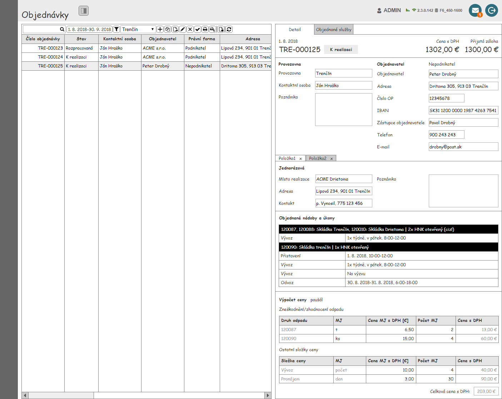
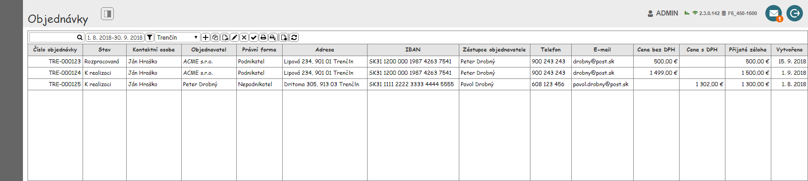
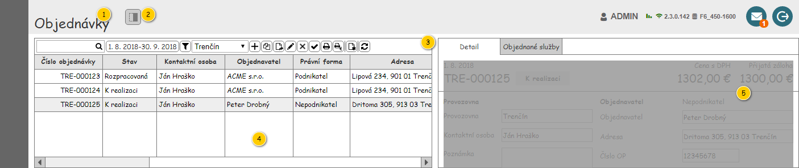
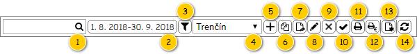
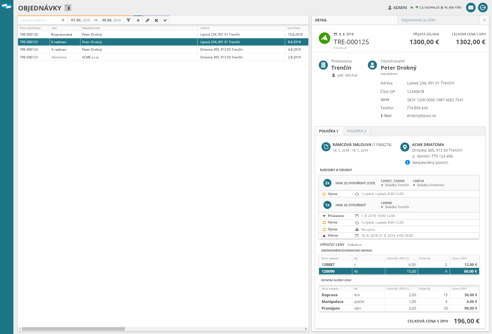

Stručný popis
Uživatelské rozhraní poskytuje uživateli přístup k datům objednávek, spouštět pro objednávky CRUD akce, spravovat data s využitím nástrojů filtrování a řazení.
Uživatelské rozhraní
Nejdřív jsou uvedeny náhledy celé obrazovky (se zobrazeným detailem a bez něj) a dále pak popsány jednotlivé ucelené části uživatelského rozhraní.

Rozložení obrazovky
Drátový diagram

Přehled UI prvků
| Callout | Prvek | Typ komponenty | Viditelné | Zpřístupněno | Hodnota | Chování |
|---|---|---|---|---|---|---|
| 1 | Titulek obrazovky | Label | Objednávky | |||
| 2 | Zapínání viditelnosti panelu detail | Přepínací tlačítko | ||||
| 3 | Nástrojová lišta | - | Ano | Ano | - | - |
| 4 | Tabulka objednávek | - | Ano | Ano | - | - |
| 5 | Panel detailu objednávky | - | Ano, pokud je zapnutá viditelnost panelu detail | Ano, pokud je viditelné. | - | V případě, že není žádná Objednávka vybrána, je zobrazeno sdělení o nevybrané Objednávce Obsah panelu (data Objednávky) je načtený po výběru Objednávky. V případě výběru více Objednávek současně jsou zobrazena data naposledy vybrané Objednávky. |
Nástrojová lišta tabulky objednávek
Drátový diagram

Poznámka: Drátový diagram je pouze ilustrativní.
Přehled UI prvků
Pokud uživatel vjede myší na prvek nástrojové lišty, je zobrazen ToolTip. V rámci ToolTipu, pokud není uvedeno jinak, je zobrazen text ve sloupci Prvek.
| Pořadí | Prvek | Typ komponenty | Viditelné | Zpřístupněno | Hodnota | Chování |
|---|---|---|---|---|---|---|
| 1 | Textový filtr | Full Text Filter (viz Ovládací prvky třetích stran) | Ano | Ano | – | Psaním filtruje řádky dle sloupců:
Ve sloupcích je vyhledáváno fulltextově. Pokud není zadán žádný text, jsou zobrazeny všechny Objednávky. Pokud není v rámci ovládacího prvku zadán hledaný text, jsou na pozadí (placeholder) vypsány názvy sloupců, podle kterých je filtrováno (viz sloupce Chování). Mezi jednotlivými názvy sloupců je použit oddělovač: „/“. Tento text je zobrazován i v rámci bublinkové nápovědy ovládacího prvku. Chování je pak řešeno v rámci použité komponenty. |
| 2 | Vybrat období | Filtr na období | Ano | Ano | Zobrazuje právě vybrané období ve formátu Při nezadaném období zobrazuje text "Období neomezeno". Výchozí hodnotou je nezadané období. | Spustit Filtrovány jsou záznamy, jejichž datum vytvoření spadá do zadaného období. Pro nezadané období jsou zobrazeny všechny Objednávky. |
| 3 | Vybrat provozovnu | Filtr na provozovnu | Ano, pokud má Uživatel právo na více než jednu Provozovnu. | Ano, pokud je viditelné | Entita Provozovna. Dostupné jsou takové Provozovny, které splňují zároveň všechny uvedené podmínky:
Výchozí hodnota je první Provozovna, na kterou má daný Uživatel právo. | Obsahuje hodnotu Nevybráno, která je umístěna jako první v rozbalovací nabídce komponenty. Po výběru Provozovny budou v tabulce zobrazeny jen Objednávky patřící pod danou Provozovnu. V případě možnosti Nevybráno jsou zobrazeny Objednávky pro všechny Provozovny dostupné uživateli. |
| 4 | Jen oblíbené | Rychlý filtr (ToggleButton)
| Ano | Ano | – | Pokud je tlačítko stisknuto, jsou k dispozici pouze takové Objednávky, pro které existuje takový záznam o Oblíbené objednávce uživatele, který se odkazuje na Uživatele, který spustil tento UC. Jsou tedy splněny všechny dále uvedené podmínky.
Jinak není dle tohoto kritéria filtrováno. Ve výchozím stavu tlačítko stisknuto není. |
| 5 | Jen objednávky s objednaným úkonem na výzvu | Rychlý filtr (ToggleButton)
| Ano | Ano | – | Pokud je tlačítko stisknuto, jsou k dispozici pouze takové Objednávky, u kterých je hodnota atributu Je obsažen objednaný úkon na výzvu rovna TRUE. Jinak není dle tohoto kritéria filtrováno. Ve výchozím stavu tlačítko není stisknuto. |
| 6 | Vytvořit objednávku | Tlačítko | Ano, pokud má Uživatel právo modifikovat Objednávky. Jinak ne. | Ano, pokud je viditelné. | - | Spustit |
| 7 | Vytvořit kopii objednávky | Tlačítko | Ano, pokud:
Jinak ne. | Ano, pokud je viditelné. | - | Spustí , na na vstup UC jsou předány následující hodnoty:
|
| 8 | Upravit objednávku | Tlačítko | Ano, pokud:
Jinak ne. | Ano, pokud je viditelné. | - | Spustí 100UC03: Upravit objednávku, na na vstup UC jsou předány následující hodnoty:
|
| 9 | Zrušit objednávku | Tlačítko | Ano, pokud:
Jinak ne. | Ano, pokud je viditelné. | - | Spustí 100UC09: Zrušit objednávku, na na vstup UC jsou předány následující hodnoty:
|
| 10 | Uzavřít objednávku | Tlačítko | Ano, pokud:
Jinak ne. | Ano, pokud je viditelné. | - | Spustí , na na vstup UC jsou předány následující hodnoty:
|
| 11 | Vytisknout objednávku | Tlačítko | Ano, pokud:
Jinak ne. | Ano, pokud je viditelné. | - | Spustí 103UC01: Vytisknout objednávku, na na vstup UC jsou předány následující hodnoty:
|
| 12 | Vytisknout potvrzení o vrácení zálohy | Tlačítko | Ano, pokud:
Jinak ne. | Ano, pokud je viditelné. | - | Spustí 103UC02: Vytisknout potvrzení o vrácení zálohy, na na vstup UC jsou předány následující hodnoty:
|
| 13 | Vytvořit šablonu z objednávky | Tlačítko | Ano, pokud:
Jinak ne. | Ano, pokud je viditelné. | - | Spustí , na vstup UC jsou předány následující hodnoty:
|
| 14 | Zařadit mezi oblíbené | Tlačítko
| Pokud Objednávka není označena jako oblíbená (viz Tabulka objednávek, sloupec Oblíbená). | Ano, pokud je viditelné. | – | Spustí , na vstup UC jsou předány následující hodnoty:
|
| 15 | Odebrat z oblíbených | Tlačítko
| Pokud je Objednávka označena jako oblíbená (viz Tabulka objednávek, sloupec Oblíbená). | Ano, pokud je viditelné. | – | Spustí , na vstup UC jsou předány následující hodnoty:
|
| 16 | Exportovat objednávky | Tlačítko
| Pokud je viditelná alespoň jedna z obsažených položek. | Vždy | – | Po stisknutí dojde k rozbalení kontextové nabídky (viz dílčí položky). |
| 16.1 | Exportovat do CSV | Button
| Pokud jsou splněny vstupní podmínky volaného chování. | Vždy | – | Po stisknutí dojde ke spuštění Exportovat objednávky v CSV. |
| 16.2 | Exportovat do XLSX | Button
| Pokud jsou splněny vstupní podmínky volaného chování. | Vždy | – | Po stisknutí dojde ke spuštění Exportovat objednávky v XLSX. |
| 17 | Obnovit data | Tlačítko | Ano | Ano | - | Načte do tabulky přehledu objednávek aktuální data z API. Zachová právě nastavenou stránku tabulky, filtry a řazení. |
Chování
Exportovat objednávky v CSV
Cílem algoritmu je export tabulky do CSV – v takové podobě, v jaké ji vidí uživatel.
Vstupní podmínky
- Jsou splněny vstupní podmínky v rámci 707UC01: Exportovat do CSV.
Tok událostí
- Systém vyhodnotí dostupnost exportu (viz Vyhodnocení možnosti exportu).
- Může dojít k předčasnému ukončení tohoto algoritmu.
- Může dojít k předčasnému ukončení tohoto algoritmu.
- Systém zobrazí systémové hlášení s informací o probíhajícím exportu – spustí 700UI06: Systémové hlášky, na vstup jsou předány následující informace:
- Kód systémového hlášení: MSG_INFO_EXPORT_IN_PROGRESS (viz Systémové hlášky).
- Kód systémového hlášení: MSG_INFO_EXPORT_IN_PROGRESS (viz Systémové hlášky).
- Systém odešle požadavek na export objednávek ve formátu CSV – spustí 707UC01: Exportovat do CSV, na vstup jsou předány následující informace:
- Název souboru: Objednavky_
, kde hodnota parametru Datum odpovídá dnešnímu datu (formát: Systémové datum; příklad hodnoty: Objednavky_2022-06-24). - Řádky: viz Získání objednávek pro export.
- Název souboru: Objednavky_
- Systém zavře systémové hlášení o probíhajícím exportu.
- Pokud proběhne export tiskové sestavy v pořádku:
- Systém předá vygenerovaný soubor uživateli (viz 707UC01: Exportovat do CSV, výstupní parametr Soubor) – začne stahování souboru.
- Jinak dojde k provedení následujících kroků:
- Systém zobrazí systémové hlášení – spustí 700UI06: Systémové hlášky, na vstup jsou předány následující informace:
- Kód systémového hlášení: výstupní data získaná v rámci exportu objednávek (viz 707UC01: Exportovat do CSV, výstupní parametr Chybové hlášení).
- Uživatel potvrdí systémové hlášení.
- Systém zavře systémové hlášení.
- Systém zobrazí systémové hlášení – spustí 700UI06: Systémové hlášky, na vstup jsou předány následující informace:
Výstupní podmínky
- Byl vygenerován soubor ve formátu CSV, který obsahuje odpovídající záznamy.
Exportovat objednávky v XLSX
Cílem algoritmu je export tabulky do XLSX – v takové podobě, v jaké ji vidí uživatel.
Vstupní podmínky
- Jsou splněny vstupní podmínky v rámci 707UC02: Exportovat do XLSX.
Tok událostí
- Systém vyhodnotí dostupnost exportu (viz Vyhodnocení možnosti exportu).
- Může dojít k předčasnému ukončení tohoto algoritmu.
- Systém zobrazí systémové hlášení s informací o probíhajícím exportu – spustí 700UI06: Systémové hlášky, na vstup jsou předány následující informace:
- Kód systémového hlášení: MSG_INFO_EXPORT_IN_PROGRESS (viz Systémové hlášky).
- Systém odešle požadavek na export objednávek ve formátu XLSX – spustí 707UC02: Exportovat do XLSX, na vstup jsou předány následující informace:
- Název souboru: Objednavky_
, kde hodnota parametru Datum odpovídá dnešnímu datu (formát: Systémové datum; příklad hodnoty: Objednavky_2022-06-24). - Název listu: Objednávky.
- Řádky: viz Získání objednávek pro export.
- Je hlavička: TRUE.
- Název souboru: Objednavky_
- Systém zavře systémové hlášení o probíhajícím exportu.
- Pokud proběhne export tiskové sestavy v pořádku:
- Systém předá vygenerovaný soubor uživateli (viz 707UC02: Exportovat do XLSX, výstupní parametr Soubor) – začne stahování souboru.
- Jinak dojde k provedení následujících kroků:
- Systém zobrazí systémové hlášení – spustí 700UI06: Systémové hlášky, na vstup jsou předány následující informace:
- Kód systémového hlášení: výstupní data získaná v rámci exportu objednávek (viz 707UC02: Exportovat do XLSX, výstupní parametr Chybové hlášení).
- Uživatel potvrdí systémové hlášení.
- Systém zavře systémové hlášení.
- Systém zobrazí systémové hlášení – spustí 700UI06: Systémové hlášky, na vstup jsou předány následující informace:
Výstupní podmínky
- Byl vygenerován soubor ve formátu XLSX, který obsahuje odpovídající záznamy.
Získání objednávek pro export
Při exportu Objednávek do souboru pracujeme s informacemi, které jsou načteny v tabulce (bez ohledu na stránkování). Zajímají nás tedy nejen odpovídající Objednávky (nastavené filtry), ale i dostupné informace o nich (zobrazené sloupce). Na vstupu případů užití pro export pak pracujeme přímo se zobrazenými hodnotami, jejich struktura je následující:
- Řádek – odpovídá konkrétnímu řádku tabulky (včetně hlavičky).
- Položka řádku – odpovídá konkrétní buňce daného řádku (formát hodnoty je totožný jako v tabulce, včetně hlavičky).
My tedy při odeslání požadavku na server musíme specifikovat, jaké záznamy budou na vstup UC pro export předány a v jakém rozsahu (příprava výsledného souboru probíhá na serveru, z uživatelského rozhraní je odeslána pouze zmíněná specifikace). Využito pak může být stejné API, jako používá tabulka. Myslet je pak třeba na následující skutečnosti:
- není využito stránkování (k dispozici budou všechny Objednávky, které odpovídají všem nastaveným filtrům),
- dostupné Objednávky odpovídají všem nastaveným filtrům v tabulce i mimo ni v době exportu (omezení daná případem užití, sloupcové filtry tabulky, další filtry mimo tabulku…),
- pořadí Objednávek odpovídá řazení tabulky v době exportu (specifikace sloupce včetně směru řazení),
- dostupné informace o Objednávce se mohou měnit (výsledná množina odpovídá nastavení viditelnosti sloupců tabulky v době exportu),
- pořadí informací o Objednávce se může měnit (výsledné pořadí odpovídá nastavení tabulky v době exportu),
- formát informací o Objednávce odpovídá tomu v tabulce (výsledná hodnota je totožná na obou místech).
Jednotlivé řádky, které jsou předány na vstup UC pro export, odpovídají následujícímu schématu:
- Vložení hlavičky – jako první řádek je vložena hlavička tabulky, její struktura a rozsah odpovídá uvedené specifikaci.
- Vložení záznamů – následně jsou vkládány jednotlivé Objednávky (řádky tabulky), jejich struktura i rozsah je dána uvedenou specifikací.
Vyhodnocení možnosti exportu
Export může být omezen dalšími pravidly. Pokud nejsou splněny určité podmínky, není možné export provést. Aktuálně jsou vyhodnocována následující kritéria:
- Množství exportovaných záznamů – počet záznamů pro export nesmí přesáhnout určitou mez.
Postup při vyhodnocení možnosti exportu je pak následující…
- Systém získá informace související s počtem záznamů:
- Počet exportovaných záznamů: celkový počet záznamů pro export (viz Získání objednávek pro export).
- Maximální počet exportovaných záznamů: konfigurační hodnota exportMaxNumberOfRecords (viz Konfigurační hodnoty).
- Pokud je Počet exportovaných záznamů menší nebo roven Maximálnímu počtu exportovaných záznamů:
- Systém pokračuje v exportu.
- Jinak je Počet exportovaných záznamů větší než Maximální počet exportovaných záznamů – systém provede dále uvedené akce:
- Systém zobrazí systémové hlášení – spustí 700UI06: Systémové hlášky, na vstup jsou předány následující informace:
- Kód systémového hlášení: MSG_INFO_EXPORT_MAX_NUMBER_OF_RECORDS_EXCEEDED (viz Systémové hlášky).
- Maximální počet záznamů: konfigurační hodnota exportMaxNumberOfRecords (viz Konfigurační hodnoty).
Uživatel potvrdí systémové hlášení.
Systém zavře systémové hlášení.
- Export je předčasně ukončen.
- Systém zobrazí systémové hlášení – spustí 700UI06: Systémové hlášky, na vstup jsou předány následující informace:
Tabulka objednávek
Pro zobrazení záznamů v přehledu je použita běžná tabulka, viz 700UI01: Komponenty – tabulka. Z toho vyplývají jak její základní vlastnosti, tak i výchozí nastavení (např. počet záznamů, které je možné označit).
Drátový diagram

Vzhled tabulky je ilustrativní. Závazná je níže uvedená specifikace v přehledu Struktura tabulky objednávek.
Přehled UI prvků
| Callout | Prvek | Typ komponenty | Zpřístupněná | Viditelná | Hodnota | Chování |
|---|---|---|---|---|---|---|
| 1 | Tabulka objednávek | Tabulka | Ano | Ano | - | Lze vybrat více řádků současně. |
Struktura tabulky objednávek
Poznámka: Výchozí pořadí sloupců je dáno pořadím v tabulce s jejich popisem.
| Název sloupce | Popis | Formát zobrazení | Možnosti sloupce | Příklad zobrazení |
|---|---|---|---|---|
Oblíbená Poznámka: V nadpisu sloupce je zobrazena ikona ra-star. V rámci bublinkové nápovědy je pak zobrazen název sloupce. | Informace, zda uživatel označil Objednávku jako oblíbenou. | Pokud označil uživatel Objednávku jako oblíbenou, je zobrazena ikona ra-star – v takovém případě musí existovat záznam o Oblíbené objednávce uživatele, který splňuje všechny dále uvedené podmínky zároveň:
Jinak není zobrazena žádná hodnota. |
| – |
| Číslo objednávky | Číslo Objednávky. |
| TRE-123456 | |
| Stav | Stav objednávky. |
| Rozpracovaná | |
| Tisk | Informace, zda byl pro Objednávku vytištěn nějaký dokument. | Ikona: ra-print. Ikona je zobrazena v případě, kdy alespoň jeden z uvedených atributů entity Objednávka nabývá hodnoty TRUE (Vytištěn dokument).
Po najetí myší na ikonu je zobrazen ToolTip s textem, který se liší dle uvedeného klíče:
|
| – |
| Zpracoval | Zaměstnanec, který založil Objednávku. | Entita Zaměstnanec – atribut Zaměstnanec entity Uživatel – atribut Vytvořil entity Objednávka. Pokud není dostupné Osobní číslo: Pokud není instance entity Zaměstnanec k dispozici, není hodnota zobrazena.
|
| Tomáš Vlasák (5) |
| Objednavatel | Název objednatele (entita Zákazník). | Název organizace / jméno a příjmení fyzické osoby. |
| Fiktivní společnost, s.r.o. |
| Typ objednatele | Podnikatel / Nepodnikatel. |
| Podnikatel | |
| Adresa | Adresa Objednavatele. |
| Liliová 305/4, 913 03, Trenčín | |
| IBAN | Číslo účtu ve formátu IBAN. |
| SK68 0720 0002 8919 8742 6353 | |
| Zástupce objednavatele | Zástupce objednavatele |
| Včelař Jiří | |
| Telefon | Telefonní číslo objednatele |
| 555 123 487 | |
| E-mail objednatele. |
| vcelar@fictive.org | ||
| Obsahuje objednaný úkon na výzvu | Informace, zda je v rámci Objednávky obsažen alespoň jeden Objednaný úkon na výzvu. |
|
| Ano |
| Celková předpokládaná cena bez DPH | Zobrazeno jen pro objednávky, kde Objednatel je plátcem DPH (Plátce DPH = true). Cena bez DPH = součet celkové ceny všech položek objednávky |
| 1 000,00 € | |
| Celková předpokládaná cena s DPH | Zobrazeno jen pro objednávky, kde Objednatel není plátcem DPH (Plátce DPH = false). Cena s DPH = součet celkové ceny všech položek objednávky. |
| 1 200,00 € | |
| Přijatá záloha | Přijatá záloha za objednávku. |
| 1 200,00 € | |
| Vytvořeno | Datum a čas vytvoření Objednávky. | formát času a data dle lokalizace |
| 23. 7. 2018 14:12 |
Stránkování tabulky
V tabulce je použito stránkování. Na jedné stránce je zobrazeno 50 záznamů.
Řazení tabulky
Tabulku lze řadit podle sloupců, které řazení podporují.
Ve výchozím stavu jsou záznamy řazené sestupně podle sloupce Číslo objednávky.
Panel detailu objednávky
Uživatelské rozhraní popsáno zde: 100UI03: Detail objednávky.
Grafický návrh
Pozor: Zobrazené hodnoty jsou pouze ilustrativní (např. zobrazení kalkulace a rámcové smlouvy zároveň).
Pozor: Ovládací prvky v nástrojové liště jsou pouze ilustrativní.

Revize
20. 8. 2025: Tomáš Nadrchal
| Odkaz | Stručný popis změny |
|---|---|
| Exportovat objednávky v CSV | Doplněno omezení počtu exportovaných záznamů a zobrazení informace o probíhajícím exportu (naznačeno růžově). |
| Exportovat objednávky v XLSX | Doplněno omezení počtu exportovaných záznamů a zobrazení informace o probíhajícím exportu (naznačeno růžově). |
| Vyhodnocení možnosti exportu | Doplněn algoritmus pro ověření možnosti exportu (naznačeno růžově). |
20. 7. 2025: Tomáš Nadrchal
| Odkaz | Stručný popis změny |
|---|---|
| Nástrojová lišta tabulky objednávek | Doplněna možnost exportu tabulky (naznačeno modře). |
| Exportovat objednávky v CSV | Doplněno chování související s exportem tabulky do CSV (naznačeno modře). |
| Exportovat objednávky v XLSX | Doplněno chování související s exportem tabulky do XLSX (naznačeno modře). |
| Získání objednávek pro export | Doplněn algoritmus pro získání objednávek pro export (naznačeno modře). |
25. 4. 2024: Tomáš Nadrchal
| Odkaz | Stručný popis změny |
|---|---|
| Nástrojová lišta tabulky objednávek | Revize komponenty pro fulltextový filtr (naznačeno růžově). |
31. 8. 2023: Tomáš Nadrchal
| Odkaz | Stručný popis změny/doplnění |
|---|---|
| Nástrojová lišta tabulky objednávek | Revize dostupných provozoven (naznačeno modře). |
10. 3. 2022: Tomáš Nadrchal
| Odkaz | Stručný popis změny/doplnění |
|---|---|
| Nástrojová lišta tabulky objednávek | Revize kontextové nabídky textového filtru (naznačeno růžově). ID-054 |
4. 3. 2022: Tomáš Nadrchal
| Odkaz | Stručný popis změny/doplnění |
|---|---|
| Nástrojová lišta tabulky objednávek | Doplněn rychlý filtr na objednávky s objednaným úkonem na výzvu a chování pro práci s oblíbenými objednávkami (naznačeno modře). ID-035 |
| Tabulka objednávek | Doplněn sloupec s informací o existenci objednaného úkonu na výzvu, doplněn sloupec oblíbené objednávky a revize možností sloupce Typ objednavatele (naznačeno modře). ID-035 |
24. 11. 2020: Tomáš Nadrchal
| Odkaz | Stručný popis změny/doplnění |
|---|---|
| Nástrojová lišta tabulky objednávek | Doplněno chování při více označených záznamech zároveň (naznačeno modře). |
| Tabulka objednávek | Doplněny obecné informace o použité tabulce (naznačeno modře). |
11. 7. 2019: Miroslav Slivoně
| Odkaz | Stručný popis změny/doplnění |
|---|---|
| Struktura tabulky objednávek | Aktualizace popisků na "Celková předpokládaná cena ...". (Přímý požadavek zákazníka - s vědomím o značné délce textu popisku.) |
19. 6. 2019: Tomáš Nadrchal
| Odkaz | Stručný popis změny/doplnění |
|---|---|
| Nástrojová lišta tabulky objednávek | Aktualizován popis dostupných Provozoven v nástrojové liště (prvek 4, naznačeno modře). |
| Struktura tabulky objednávek | Aktualizován popis sloupce Zpracoval (pořadí 4, naznačeno modře). Změna nadpisů sloupců s cenou (pořadí 12, 13, naznačeno modře). |
17. 6. 2019: Tomáš Nadrchal
| Odkaz | Stručný popis změny/doplnění |
|---|---|
| Nástrojová lišta tabulky objednávek | Aktualizován popis – zobrazení ToolTipu tlačítek nástrojové lišty (naznačeno modře). |
| Struktura tabulky objednávek | Aktualizován popis – možnosti práce se sloupci tabulky (naznačeno modře). |
4. 6. 2019: Tomáš Nadrchal
| Odkaz | Stručný popis změny/doplnění |
|---|---|
| Struktura tabulky objednávek | Aktualizace chování dle změnových požadavků (naznačeno modře). Jedná se o zobrazení příznaku o tom, že byla Objednávka vytištěna. |